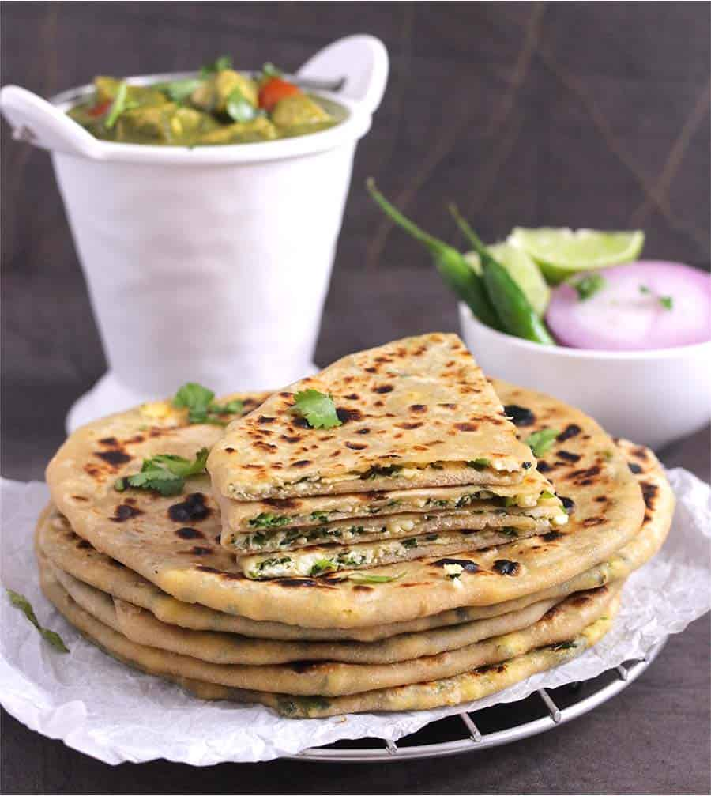

Panner Paratha Recipe
Description
It is a tempting and healthy shallow fried Indian bread stuffed with yummy
paneer based lightly spiced mixture. The secret of delicious paneer stuffed
paratha prepared by this recipe lies in its perfectly balanced mixture of
grated paneer, fresh coriander and mint leaves, chilli and spices which gives
just right amount of not too spicy, flavorful taste. Butter laced paneer
paratha and thick curd is just heaven.
Ingredients
For Dough
- 1½ cups + 1/2 cup Wheat Flour
- 3 teaspoons Oil + for shallow frying
- Salt
For Stuffing
- 3/4 cup grated or crumbled Paneer (cottage cheese)
- 1/2 cup boiled and grated Potato
- 2 Green Chillies, finely chopped
- 1 teaspoon grated Ginger
- 2 tablespoons finely chopped Coriander Leaves
- 1 tablespoon chopped Mint Leaves, optional
- 1 teaspoon Coriander-Cumin Powder
- 1/2 teaspoon Red Chilli Powder
- 1/4 teaspoon Garam Masala Powder
- 1 teaspoon Lemon Juice or Dry Mango Powder
- Salt
Steps
For Dough
-
Combine 1½ cups wheat flour, 2 teaspoons oil and salt in a large bowl.
Add enough water (incrementally in small quantities) and knead smooth
and soft dough (like roti dough). Grease surface of the dough with
1-teaspoon oil. Cover it and set it aside for 15-20 minutes to settle
at room temperature.
For Preparing Stuffing
-
Combine grated paneer and grated potato in a medium bowl.
Make sure that there are no potato lumps, as they will tear the
dough while rolling. Add chopped green chillies, grated ginger,
chopped coriander leaves, coriander-cumin powder, red chilli powder,
garam masala powder, chopped mint leaves, lemon juice and salt.
-
Mix all ingredients properly. Filling (stuffing) is ready.
Directions for Making Paneer Paratha
-
Divide the dough into 6 equal parts and give them a round shape like
ball. Take one dough ball, press it between your palms or on rolling
board to make a flat pattie. Take 1/2 cup dry wheat flour in a deep
plate. Coat each pattie with dry flour.
-
Place dough pattie on rolling board/roti making board (chakla) and
roll it out using a rolling pin into a thick circle of approx. 4-5 inch
diameter. Put approx. 2 tablespoons stuffing in the center, wrap it
with sides of rolled circle, seal the edges and again give it a round
shape like ball.
-
Press stuffed ball on rolling board and coat it with dry flour. Roll
it out gently into 1/4 inch thick circular paratha of 6-7 inch
diameter (like roti or chapati)
-
Heat a tava/griddle over medium flame. When tava is medium hot, place
rolled paratha over it.
-
When tiny bubbles start to rise on the surface, flip it upside down
and reduce flame to low. Spread 1/2 teaspoon oil over the surface
with the help of a spatula or a spoon and cook for approx. 30 seconds.
-
Flip again and spread 1/2 teaspoon oil over another side.
Gently press the paratha with spatula and cook for 30-40 seconds
over medium flame. Repeat flip and cook process until golden brown
spots appear on both sides.
-
Transfer it to a plate and spread some butter over it. Follow the same
process for remaining dough balls. Serve Paner Partaha with pickle and
onion raita.
Go back